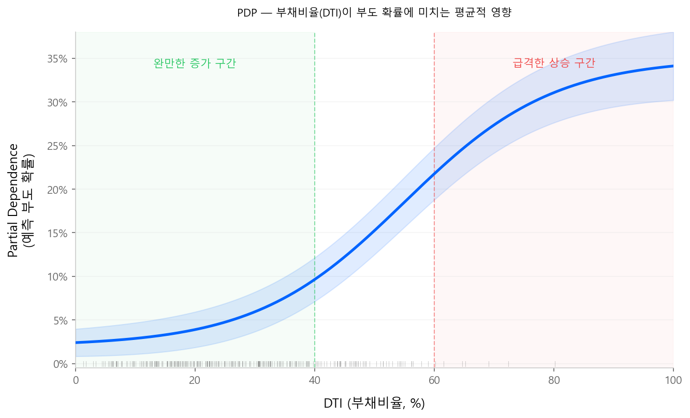
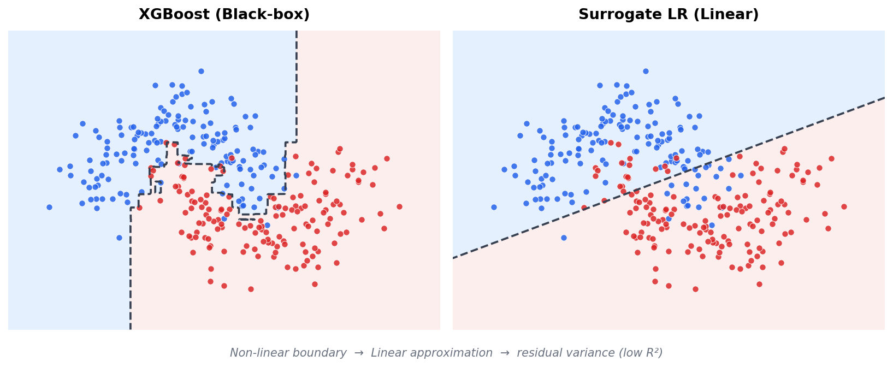
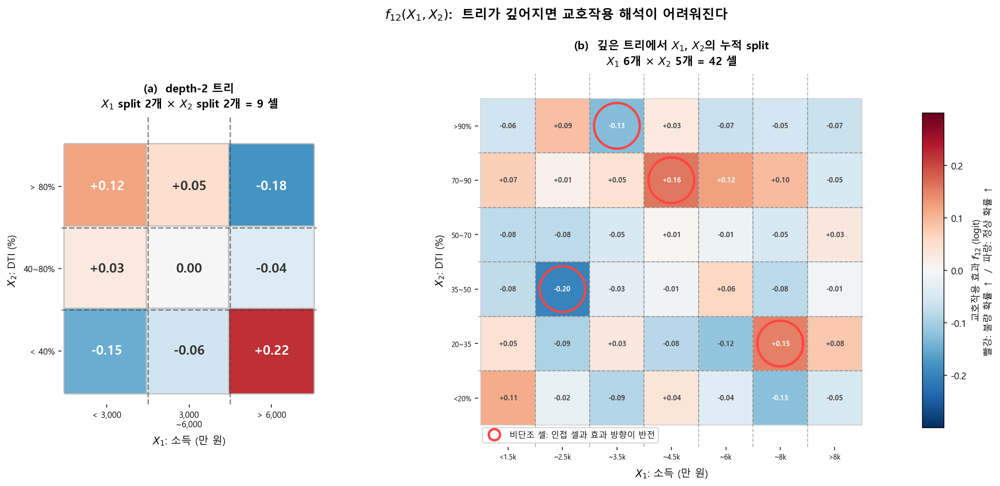
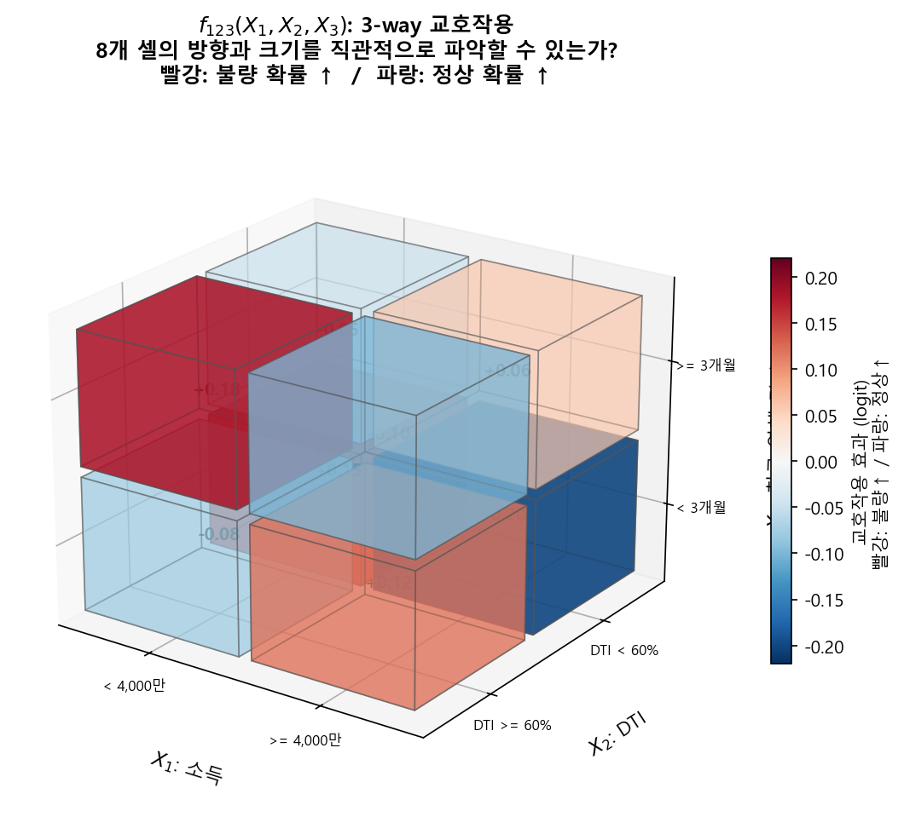

해석 가능성 (Interpretability)¶
저자 노트
해석 가능성(Interpretable ML)은 그 자체로 하나의 분야다. 이 페이지에서는 신용평가 실무에 필요한 핵심 개념과 도구만 간결하게 다룬다. 더 깊은 이해가 필요하다면 Christoph Molnar의 Interpretable Machine Learning을 강력히 추천한다. 저자 본인도 이 책으로 많은 공부를 했으며, ML 해석 가능성에 관한 가장 체계적이고 접근하기 쉬운 자료라고 생각한다.
1.1 XAI란 무엇인가¶
XAI(eXplainable Artificial Intelligence)는 AI 모형의 의사결정 과정을 사람이 이해할 수 있도록 만드는 기술과 방법론의 총칭이다. 블랙박스 모형이 "무엇을" 예측했는지뿐 아니라, "왜" 그렇게 예측했는지를 설명하는 것이 핵심이다.
용어 정리¶
실무에서 혼용되지만, 학술적으로는 구분되는 개념들이 있다.
| 용어 | 영문 | 의미 |
|---|---|---|
| 해석 가능성 | Interpretability | 모형의 작동 원리를 사람이 직접 이해할 수 있는 정도. 로지스틱 회귀, 의사결정나무 등 모형 자체가 투명한 경우 |
| 설명 가능성 | Explainability | 블랙박스 모형에 사후적으로 설명을 부여하는 것. SHAP, LIME 등 별도의 설명 도구를 사용 |
| 투명성 | Transparency | 모형의 학습 과정, 데이터, 의사결정 로직이 공개되어 있는 정도 |
| 공정성 | Fairness | 모형이 특정 집단(성별, 인종 등)에 대해 체계적 차별을 하지 않는 성질 |
Interpretability vs Explainability
해석 가능한(Interpretable) 모형은 별도 도구 없이 구조 자체로 이해된다 — 스코어카드가 대표적이다. 설명 가능한(Explainable) 모형은 그 자체로는 이해하기 어렵지만, SHAP 등 외부 도구로 사후 설명이 가능하다. XAI는 이 두 가지를 모두 포괄하는 상위 개념이다.
모형 복잡도와 해석 가능성의 트레이드오프¶
해석 가능성 높음 ◀━━━━━━━━━━━━━━━━━━━━━━━━━━▶ 낮음
│ │ │ │
선형 회귀 의사결정나무 Random Deep
스코어카드 Forest Learning
│ │ │ │
예측 성능 낮음 ◀━━━━━━━━━━━━━━━━━━━━━━━━━━▶ 높음
전통 스코어카드(로지스틱 회귀)는 Interpretable by design이다. 반면 트리 앙상블이나 딥러닝은 성능은 높지만 자체 해석이 어려워, XAI 기법이 필수가 된다.
1.2 왜 해석이 필요한가¶
전통 로지스틱 회귀 스코어카드는 태생적으로 해석이 쉽다. 각 변수의 WoE × β가 곧 점수이고, 점수표 한 장으로 "왜 이 고객이 이 등급인지" 설명할 수 있다.
트리 앙상블(XGBoost, LightGBM)은 수백~수천 개의 트리를 합산한 결과이므로, 모형 내부를 직접 들여다보는 것이 불가능하다. 그러나 해석의 필요성은 사라지지 않는다.
| 이해관계자 | 요구 |
|---|---|
| 규제 기관 | "이 모형이 차주를 차별하지 않는다"는 근거 |
| 심사 담당자 | "왜 이 고객이 거절되었는가"에 대한 사유 |
| 모형 개발자 | 모형이 합리적인 패턴을 학습했는지 검증 |
| 경영진 | 모형 도입의 근거와 리스크 |
1.3 해석의 범위 — Global과 Local¶
ML 해석 도구는 범위(scope)에 따라 두 축으로 나뉜다 (Molnar, 2022).
| Global | Local | |
|---|---|---|
| 질문 | "모형은 전체적으로 어떻게 작동하는가?" | "이 고객은 왜 이 점수를 받았는가?" |
| 대상 | 모형 전체 | 개별 예측 건 |
| 용도 | 모형 검증, 변수 중요도, 감독기관 보고 | 거절 사유, 심사 설명, 민원 대응 |
| 대표 도구 | Feature Importance, PDP, Surrogate, mean(|SHAP|) | ICE, LIME, SHAP Waterfall |
신용평가에서는 두 축이 모두 필요하다. Global 해석은 "이 모형이 합리적인 패턴을 학습했는가"를 검증하고, Local 해석은 "이 고객이 거절된 이유"를 설명한다.
Global 해석 — 모형 전체의 행동을 이해한다
모형이 전체적으로 어떤 변수를 중요하게 보고, 어떤 패턴을 학습했는지 파악한다.
Feature Importance (Split / Gain)¶
트리 앙상블에 내장된 가장 기본적인 변수 중요도 지표다.
- Split Importance: 각 변수가 트리 분할에 사용된 횟수
- Gain Importance: 각 변수가 분할 시 획득한 불순도 감소(gain)의 합
Gain이 더 정보적이지만, 카디널리티가 높은 변수(범주 수가 많은 변수)에 편향되는 경향이 있다. 빠른 개요용으로 유용하나, 변수의 방향(양/음)이나 효과 크기를 알 수 없다는 한계가 있다.
Permutation Importance¶
변수 하나의 값을 무작위로 셔플한 뒤, 모형 성능(KS, AR 등)의 하락 폭으로 중요도를 측정하는 방법이다.
- Model-agnostic: 어떤 모형에든 적용 가능
- Feature Importance와 달리 모형 성능 기준이므로, 실제 예측에 대한 기여를 더 직접적으로 반영
- 변수 간 상관이 높으면 중요도가 분산되는 문제가 있다
PDP (Partial Dependence Plot)¶
특정 변수가 예측에 미치는 평균적 영향을 시각화하는 도구다.
변수 \(x_s\)의 Partial Dependence:
- \(x_s\): 관심 변수 (고정할 값을 바꿔가며)
- \(x_C^{(i)}\): 나머지 변수 (데이터의 실제 값 그대로)
- 모든 샘플에 대해 관심 변수만 바꾸고, 예측값의 평균을 구함
신용평가 예시
"부채비율(DTI)"의 PDP를 그리면, DTI가 증가함에 따라 예측 부도 확률이 어떻게 변하는지 평균적 경향을 볼 수 있다. DTI 40%까지는 완만하게 증가하다가 60%를 넘으면 급격히 상승하는 패턴이 보인다면, 모형이 합리적인 관계를 학습했다고 판단할 수 있다.
{kind=link}

PDP의 한계:
- 변수 간 상호작용을 무시: 다른 변수를 고정한 상태의 평균이므로, 교호작용 효과가 상쇄됨
- 상관된 변수 문제: DTI와 소득이 강하게 상관되어 있을 때, DTI를 극단값으로 설정하면서 소득은 원본 그대로 유지하는 비현실적 조합이 발생
Surrogate Model (대리 모형)¶
블랙박스 ML 모형의 예측값을 종속변수로 놓고, 해석 가능한 모형(로지스틱 회귀 등)으로 근사하여 설명하는 전략이다. ML의 성능은 유지하면서, 설명은 전통적 스코어카드 형태로 제공한다.
ML 모형 학습 → \(\hat{p}\) 산출 → 스코어 변환 → 스코어를 종속변수로 LR 적합 → 스코어카드 생성
{kind=link}

대리 모형의 \(R^2\)가 낮은 것은 결함이 아니라 구조적 한계다. XGBoost가 잡아내는 비선형 교호작용과 고차 분기 효과를 가법 선형 구조로 재현하는 것은 원리적으로 불가능하기 때문이다.
이 접근에 대해서는 찬반 논쟁이 있다. 규제 프레임워크(SR 11-7, EBA 가이드라인)에 부합하는 익숙한 포맷이라는 장점이 있지만, Sudjianto & Zhang (2021, Wells Fargo)은 본질적 딜레마를 지적한다 — 대리 모형이 원래 모형을 잘 근사하면 "그냥 그 모형을 쓰면 되고", 못 근사하면 설명이 misleading이 된다. 이들은 대안으로 내재적으로 해석 가능한 ML(1-Depth GBM, EBM 등)을 옹호한다.
참고 자료
- Dumitrescu et al. (2022, EJOR) — PLTR: 트리 규칙 + 페널티 LR 하이브리드
- Sudjianto & Zhang (2021) — 내재적 해석 가능 ML 옹호 (Wells Fargo)
- xbooster — XGBoost 리프 노드 → 스코어카드 포인트 직접 변환
mean(|SHAP|)¶
각 변수의 SHAP value에 절댓값을 취하고 전체 샘플에 대해 평균을 내면, globally 해석 가능한 변수 중요도가 된다.
절댓값을 취하므로 변수가 예측을 높이는지 낮추는지(방향)는 알 수 없고, 양의 방향이든 음의 방향이든 해당 변수가 예측에 얼마나 영향을 미치는지(크기)만 측정한다. 방향까지 보려면 Beeswarm(Summary Plot)을 함께 확인해야 한다.

출처: SHAP GitHub (MIT License)
Local 해석 — 개별 예측을 설명한다
특정 고객 한 명의 예측이 왜 이 값인지, 어떤 변수가 기여했는지 설명한다.
ICE (Individual Conditional Expectation)¶
PDP의 개별 버전이다. PDP가 전체 샘플의 평균 효과를 하나의 곡선으로 보여준다면, ICE는 각 샘플의 개별 곡선을 모두 그린다. PDP 곡선 위에 ICE를 겹쳐 그리면, 변수 효과의 이질성(heterogeneity)을 시각적으로 확인할 수 있다 — ICE 곡선들이 서로 교차하면 교호작용이 존재한다는 신호다.
LIME (Local Interpretable Model-agnostic Explanations)¶
개별 예측 주변의 데이터를 섭동(perturbation)하여 해석 가능한 대리 모형을 적합하고, 해당 예측에 가장 영향을 미친 변수를 식별하는 방법이다. Model-agnostic이라는 장점이 있지만, 섭동 방식과 이웃(neighborhood) 정의에 따라 결과가 달라지는 안정성 문제가 지적된다.
SHAP Waterfall¶
개별 차주의 예측을 base value(전체 평균)에서 시작하여, 각 변수의 기여를 순차적으로 누적하는 시각화다. 하나의 예측이 "왜 이 값인지"를 변수별로 분해하여 보여주므로, 거절 사유 설명에 가장 직관적인 도구다.
SHAP 시각화 상세
Waterfall Plot의 실제 예시와 함께, Bar Plot · Beeswarm · Force Plot · Dependence Plot 등 SHAP의 주요 시각화를 SHAP 이론 — 2.4 SHAP 시각화에서 상세히 다룬다.
1.4 해석 가능한 ML 모형의 실무적 조건¶
두 가지 활용 경로¶
머신러닝 모형을 신용평가에 도입할 때, 해석 요구 수준에 따라 경로가 갈린다.
경로 1 — 성능 극대화 (전략모형)
비선형성을 충분히 반영한 모형(예: max depth 7 이상의 GBM)은 KS, AR 등 변별력 지표가 극대화된다. 이 모형은 기존 스코어카드 위에 얹어서 승인/거절 경계를 보정하는 override 용도로 활용할 수 있다. 개별 변수의 효과를 설명할 필요 없이, "이 고객의 최종 스코어가 몇 점인가"만 중요한 맥락이다. 이 경우에도 SHAP value를 통한 local interpretation은 가능하므로, 거절 사유 제공 등 규제 대응에 활용할 수 있다.
경로 2 — 해석 충실 (평점모형)
모형의 global structure — 각 변수의 효과 방향, 교호작용의 존재와 크기 — 를 사람이 직접 검토하고 납득할 수 있어야 하는 경우다. 심사역이 shape function을 보고 "이 변수는 이런 방향으로 작용한다"고 확인할 수 있어야 한다. 이 경우 아래 세 가지 조건이 필요하다.
조건 1 — 변수당 bin 수를 제한한다 (≤ 5)
bin이 많아질수록 interaction heatmap의 셀 수가 폭발하여 사람이 패턴을 읽을 수 없다.
각 feature를 5개 이하의 구간으로 binning해야 한다.
왜 5개인가? 2차 교호작용을 고려하면 답이 나온다. 변수 2개가 각각 5구간이면, interaction heatmap은 5×5 = 25칸이다. 25칸 정도면 사람이 패턴을 눈으로 읽을 수 있다. 10구간이면 100칸, 20구간이면 400칸 — 이론적으로는 purification이 되지만, 사람이 heatmap 한 장을 보고 패턴을 파악하기란 사실상 불가능하다.
조건 2 — 교호작용을 2차원으로 한정한다
2-way까지는 heatmap 한 장으로 보여줄 수 있지만, 3-way부터는 불가능하다.
interaction term의 차수를 최대 2-way로 제한해야 한다.
- 2-way interaction: heatmap(행 × 열 + 색상) 한 장으로 표현 가능
- 3-way interaction: 큐브(행 × 열 × 깊이 + 색상) — 4차원이 되어 한 장의 그림으로 표현 불가
{kind=link}

{kind=link}

EBM(GA²M)이 의도적으로 2-way까지만 허용하는 것도 이 이유다.
조건 3 — 단조성 (Monotonicity)
비단조 패턴이 과적합인지 실제인지 판단하기 어렵다. 단조 제약으로 해석력과 안정성을 확보한다.
트리가 자유롭게 학습하면 "소득 3,000만 이하에서는 부도율 증가, 3,000~5,000만에서 감소, 5,000만 이상에서 다시 증가" 같은 비단조 패턴이 나올 수 있다. 이것이 과적합인지 실제 패턴인지를 심사역이 판단해야 하는데, bin이 많아질수록 비단조 패턴의 가짓수가 폭발한다.
monotone_constraints 파라미터로 단조 제약을 거는 것은 해석력과 안정성을 동시에 확보하는 방법이다. 상세는 1-Depth GBM 스코어카드를 참조한다.
왜 트리 모형인가¶
이 세 조건을 거치면, 신용평가에서 트리 기반 모형을 선호할 수밖에 없는 이유가 명확해진다:
- 해석의 용이성: shape function, feature importance, interaction heatmap 등 해석 도구가 자연스럽게 따라온다
- Post-hoc 처리의 간결함: 트리의 leaf를 bin으로 취급해서 텐서를 만들고, 가중평균을 빼는 것만으로 fANOVA 분해(purification)가 완성된다
- 자동 구간화: 연속 변수를 discretize하는 과정을 트리가 자동으로 해주므로, 별도의 binning 없이 바로 purification에 넘길 수 있다
신경망이나 다른 비선형 모형에서 같은 수준의 post-hoc 해석을 하려면, 먼저 함수를 piecewise-constant로 근사하는 추가 단계가 필요하다. 트리는 이것이 구조적으로 이미 되어 있다.
다음 페이지
SHAP 이론 --- Shapley Value의 수학적 배경과 TreeSHAP 알고리즘을 다룬다.